Statnett InnoBoost · 4 June 2026
Physical AI for the real world.
The shift
You're all using AI now.
At your desk, like everyone.
At your desk, like everyone.
But you don't just use this revolution.
You have to power it.
You have to power it.
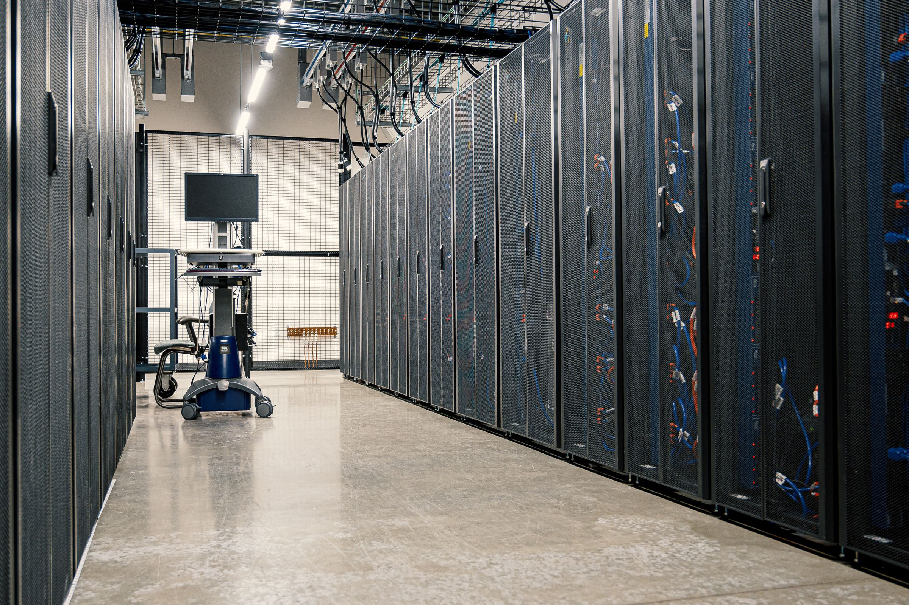
Every data center runs on electricity.
Over 20,000 MW are waiting in your connection queue.
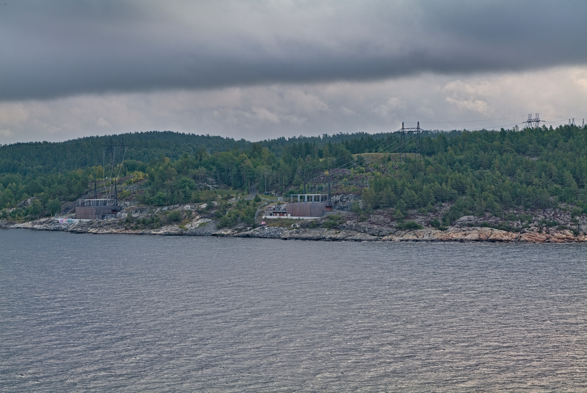
Build more grid.
Faster and cheaper than ever before.
Faster and cheaper than ever before.

Seen on a building site
"Hey ChatGPT,
finish this building."
finish this building."
It can't.
ChatGPT won't finish your next power line. It can't move a single tonne of steel.

Physical AI will.
It's where the actual work gets done.
It's where the actual work gets done.
Who we are
We're Hive.
We put a brain into machines you already own.
We put a brain into machines you already own.
Where we came from
Red Rock, 2009.
Ocean Infinity, 2021.
Hive, 2022.
Ocean Infinity, 2021.
Hive, 2022.
We didn't come from tech. We came from the physical world.
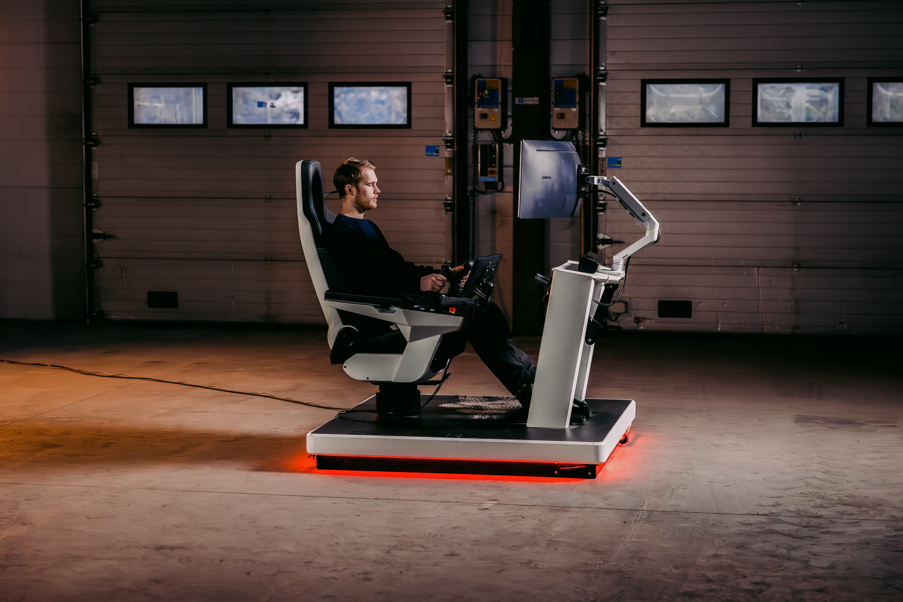
We don't sell software.
We sell productive machine-hours.
We sell productive machine-hours.
Here's what that looks like.

One machine. One tunnel.
In Norway.
In Norway.
If that were just us,
it would be a nice story.
it would be a nice story.
It isn't just us.
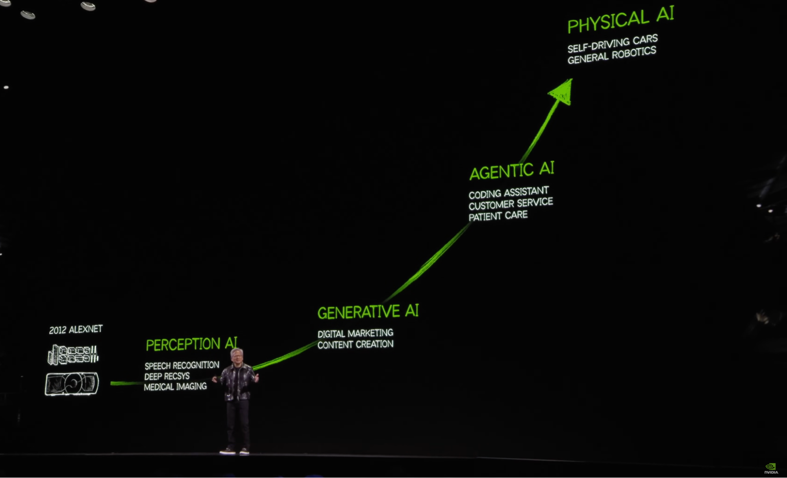
2026
The year AI
learned to move.
learned to move.
"The ChatGPT moment for physical AI is here." — Jensen Huang, NVIDIA
The wave · Waymo
500,000 driverless rides a week.
Doubled in a year.
The wave · Figure
Humanoids on the BMW line.
Full shifts. Five days a week.
The wave · 1X Neo
And one is moving into homes.
It's Norwegian.
It's Norwegian.
The wave · Unitree
5,500 robots last year.
20,000 this year.
20,000 this year.
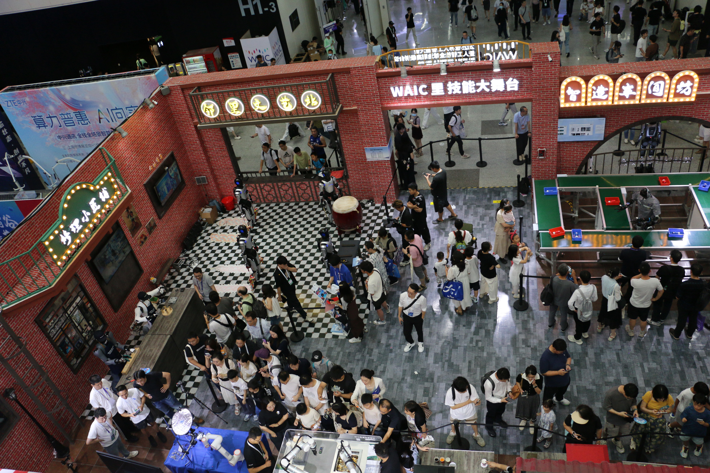
The wave · China
In China, this is boring.
500,000 m². 18 halls, all packed. Here it's still novel. There it's everyday.
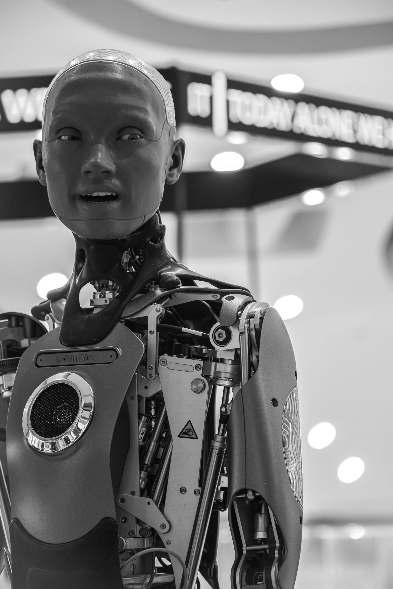
Cars. Factories. Homes.
Next: the machines that build and power everything.
The market
Software AI: ~$90B.
Physical work: ~$57T.
Physical work: ~$57T.
Physical work · global labour~$57T
Software AI · LLMs
Construction, manufacturing, logistics, agriculture, energy — all physical, all untouched by software AI. 600× the LLM market.
Sources: ILO Global Wage Report + IMF (labour, derived) · Grand View / Statista (GenAI software)
Your world
So — your world.
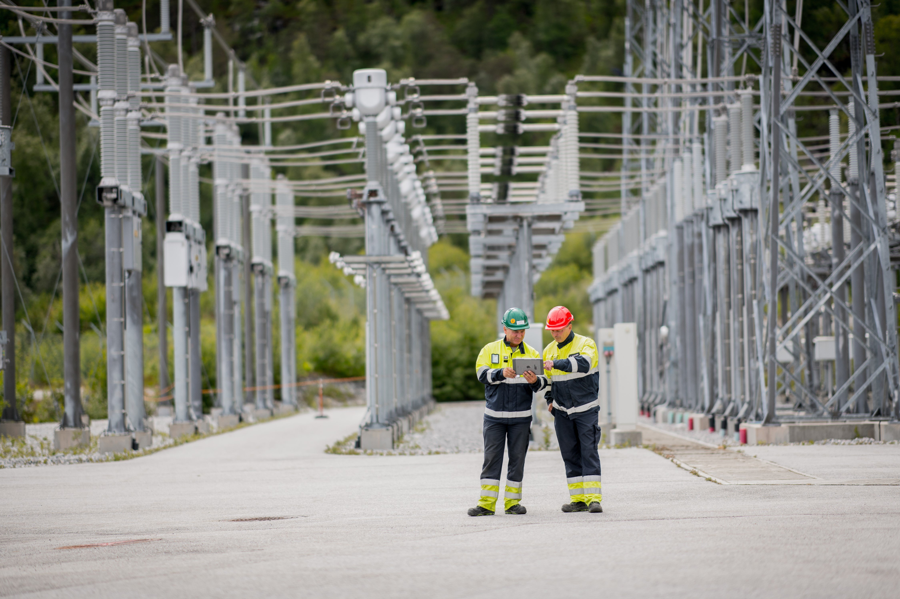
2,372 of you.
But your contractors build the grid, across 250 projects.
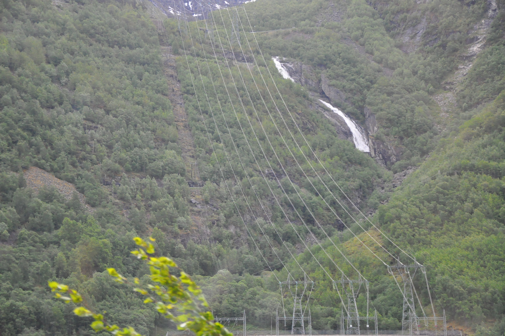
228 stations.
13,000 km of line.
13,000 km of line.
Kristiansand to Kirkenes. A lot of it where there's no road.
Over to you
What physical work eats the most time, money, or risk?
One word — out loud
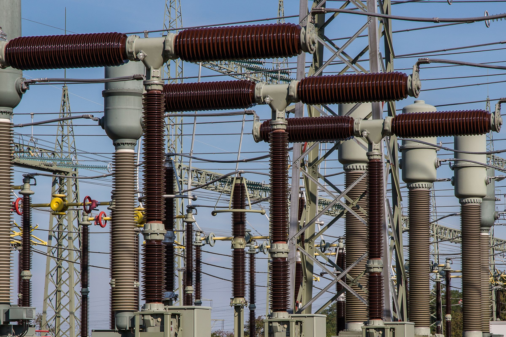
Half this grid is end-of-life by 2040.
And there aren't more people to hire. Everyone in Europe wants the same crews.
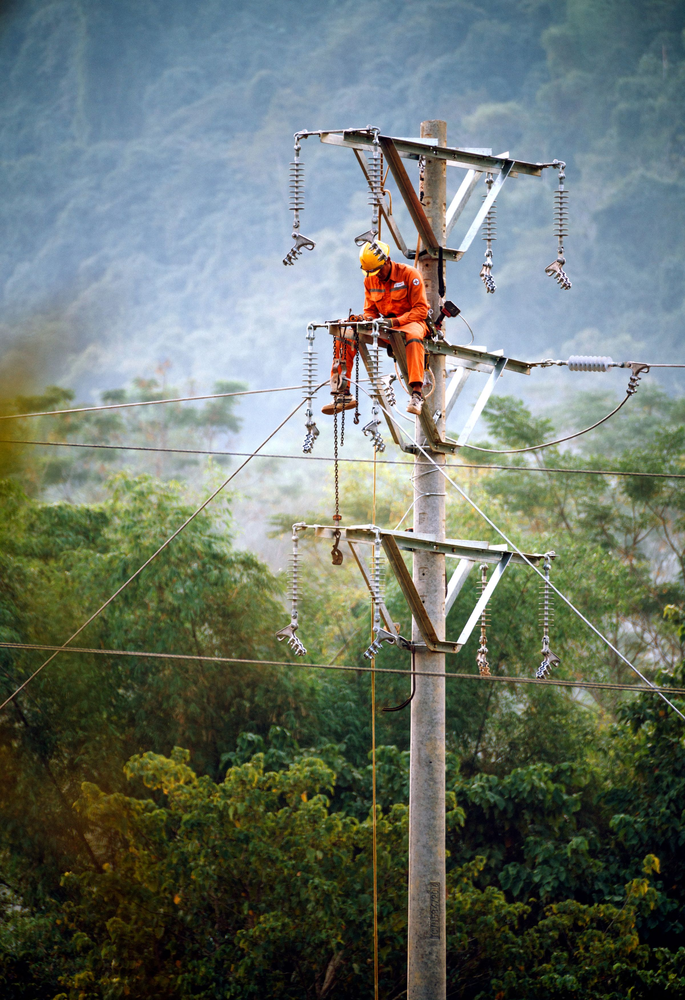
Last year: eleven serious near-misses.
Working at height.
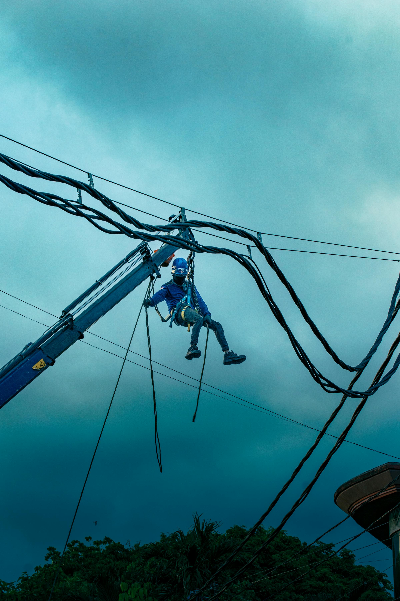
Your goal is zero.
You don't reach zero by being careful. You reach it by taking people out of the red zone.
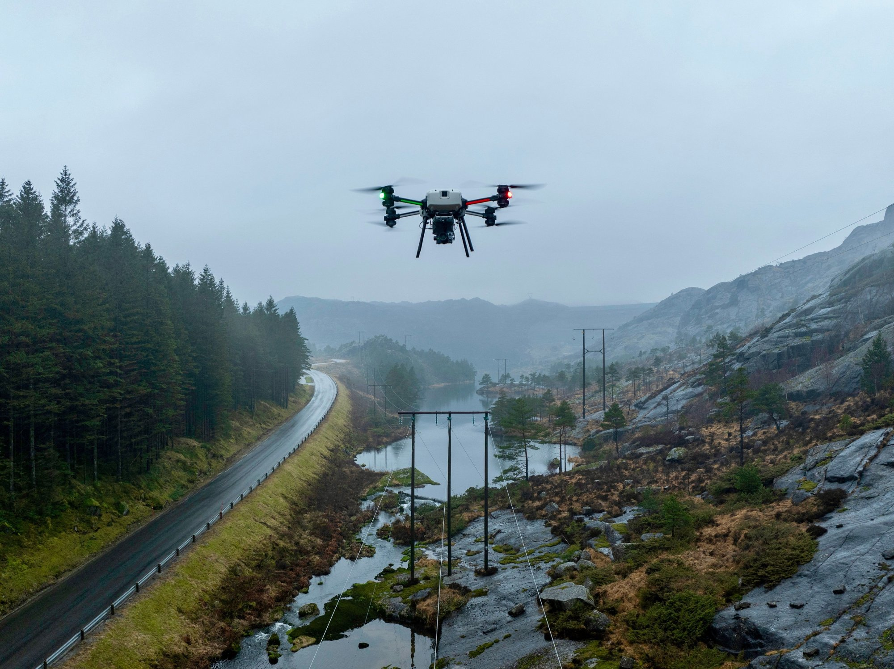
You already do this
Helicopter inspections, now flown by autonomous drones.
That was the air. The ground is next.

How we do it
We don't replace the machine. We retrofit it.
Sensors, lidar and a control cabinet on the machine you already own. Live in days. Reversible.

The honest problem
AMRs were built to replace labour.
They can't. Yet.
They can't. Yet.
Conveyor belts on wheels: fixed routes, one task, stop on exception. Real work needs judgment. Everyone who ran a pilot met this gap.

Where Hive begins
One model. Not a fleet of single-purpose robots.
A packaged service: the Kristiansand ops center, trained operators, 24/7. Supervision is the product, not the fallback.
How it works
Fixed automation. Remote control.
Now: a machine that sees, reasons, and acts.
Now: a machine that sees, reasons, and acts.
Watch — no script
Vision in. Language in. Action out.
Show it the scene. Tell it the goal in plain words. It acts.
The same breakthrough as ChatGPT.
Now in a body.
Now in a body.
Words in, words out. Here: the world in, motion out.
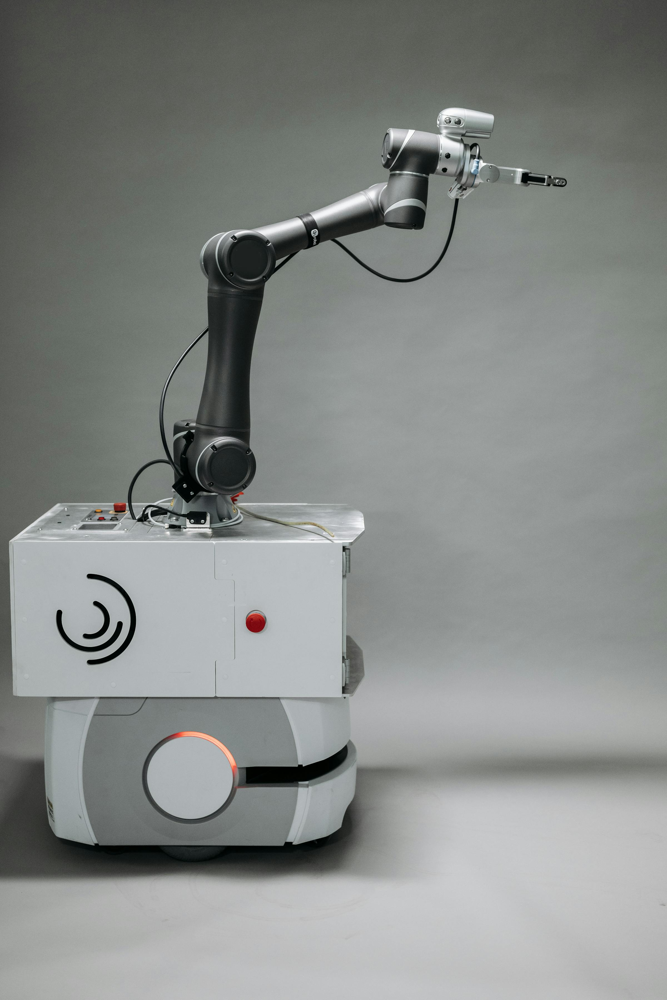
Why it transfers
A wheel loader is just a very large robot arm.
Degrees of freedom are the unit of transfer. Robot arm: 6. Excavator: 6. Loader: 5. We started with a robot arm in Kristiansand in 2024. In 2026 a Toyota forklift runs in production. Same model, bigger body. Every correction trains the whole fleet.
Already here · 01
Vikafjellet.
Remote operation in the mountains. Approved by the Ministry.
Already here · 02
Yara.
One of Europe's harshest industrial sites.
Already here · 03
A working quarry.
Every day.
Already here · 04
Indoors too.
Forklifts, warehouses, ports.
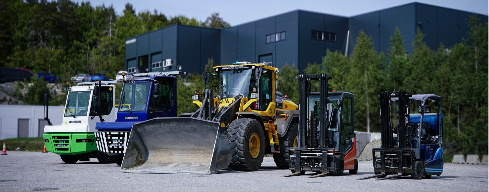
One model.
Every machine.
Every machine.
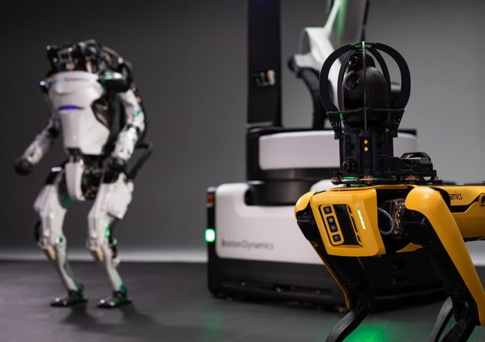
Our next step
Swap our brain into the humanoid.
Take a humanoid, replace its brain with ours: remote-controllable, semi-autonomous. We've run the robot dog the same way. Norwegian software, operators and data, from Kristiansand. Then: one in every station.
Back to you
So — back to you.
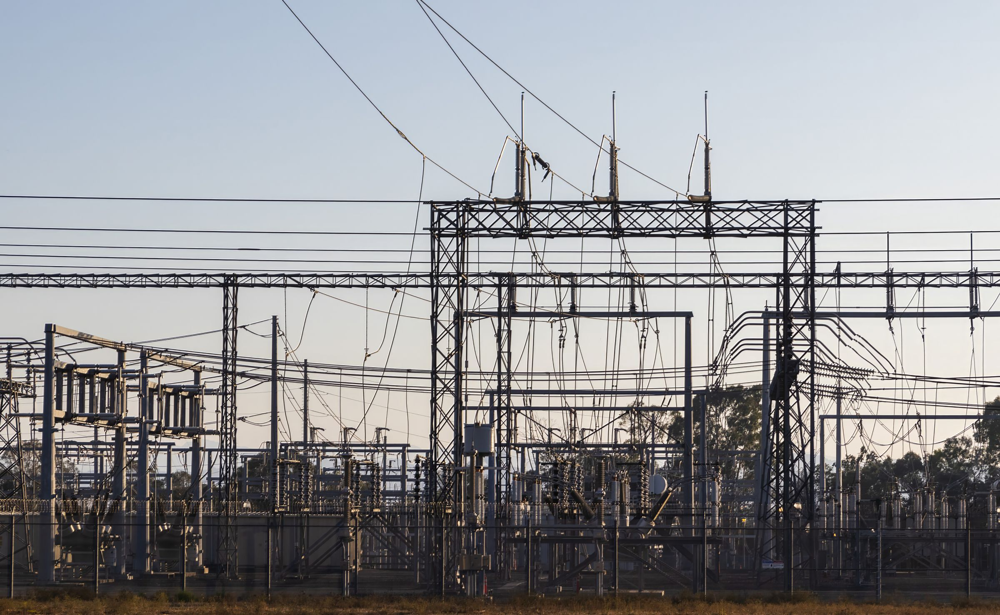
A robot at every station.
The expert in Nydalen takes over when it matters.
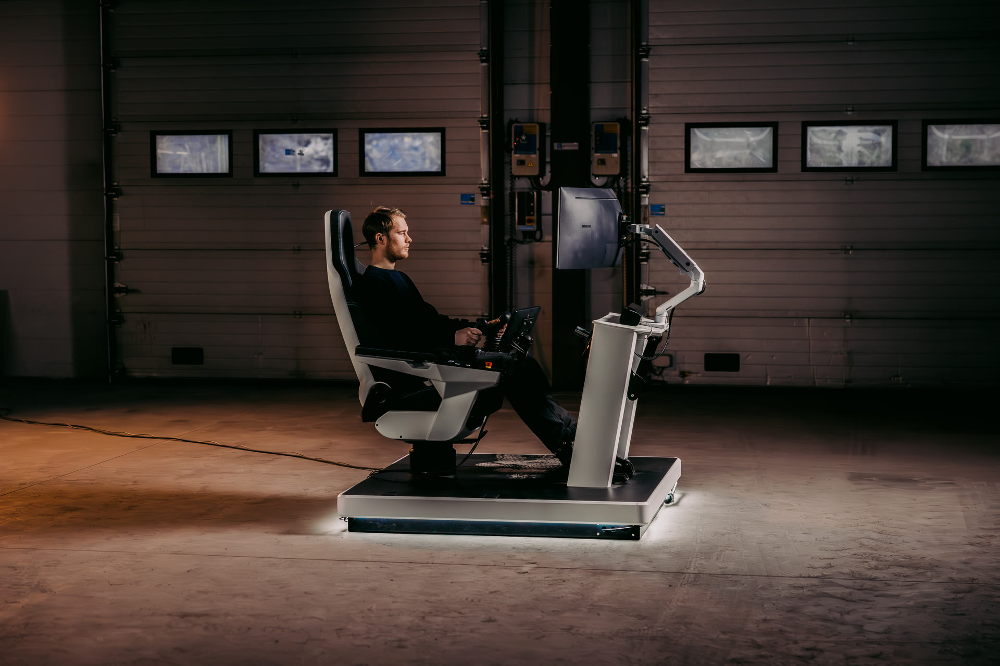
Robustness. Preparedness. Safety.
Your strategy — built differently.
Over to you
Where could this create value at Statnett?
On your phone
Over to you
What's the biggest barrier to using it?
On your phone
This isn't coming.
It's here.
It's here.